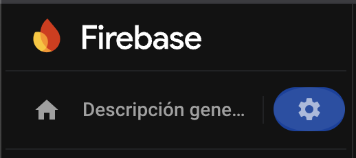
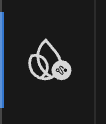
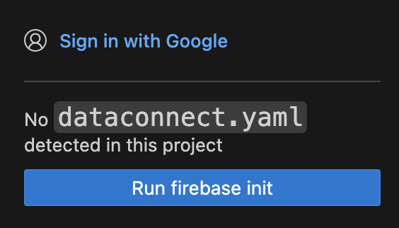
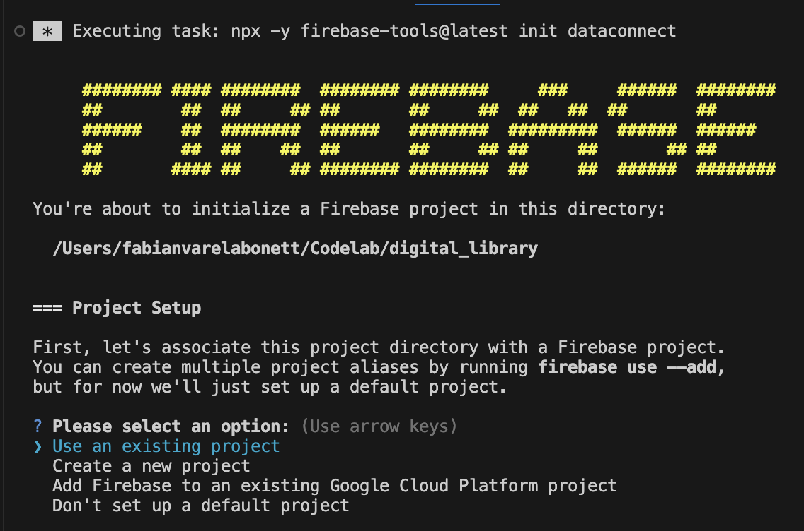
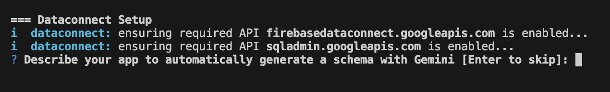
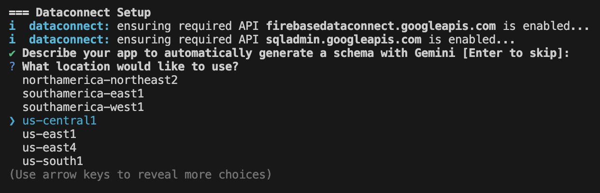
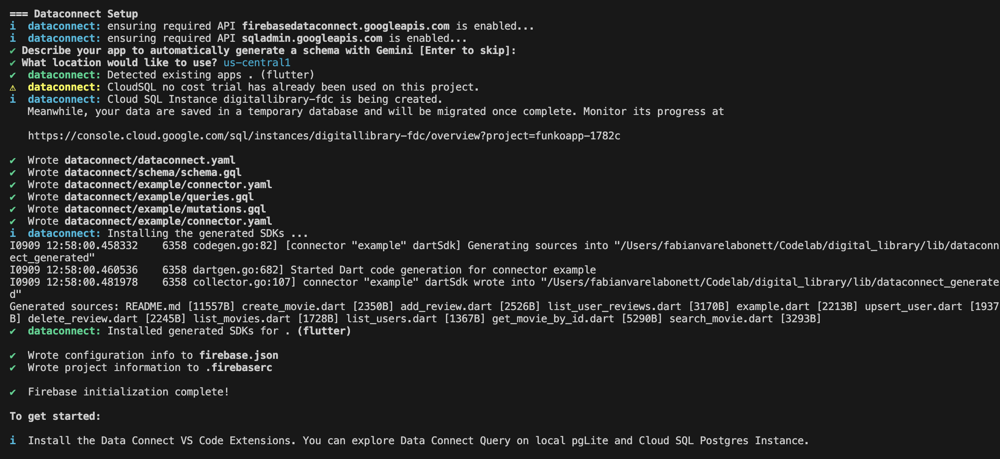
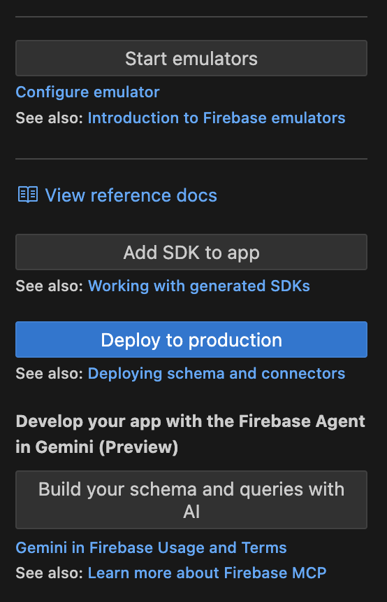
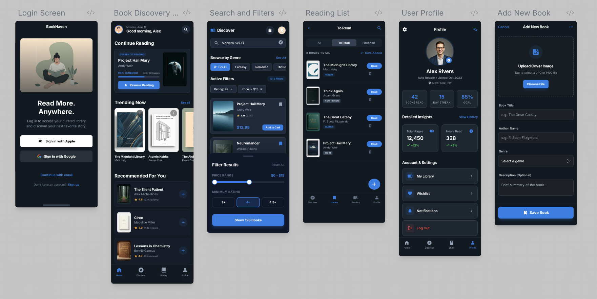

Al finalizar este taller, serás capaz de:
Como reto....
Para descargar el SDK de Flutter. Ingresa aquí.
Para Mac/windows con PowerShell.
# Crear proyecto Flutter
flutter create --org com.digital_library digital_library
# Ir al directorio del proyecto
cd digital_library
# Borrar el test de la app de ejemplo: deja de compilar cuando reemplaces lib/main.dart
rm test/widget_test.dart
Para Mac.
# Instalar Firebase CLI
sudo npm install -g firebase-tools
# Instalar el tools de Firebase SQL Connect.
curl -sL https://firebase.tools/init/dataconnect | editor=true bash
# Iniciar sesión en Firebase
firebase login
# Agregar el paquete global de FlutterFire CLI.
dart pub global activate flutterfire_cli
Para Windows con PowerShell.
# Instalar Firebase CLI
npm install -g firebase-tools
# Configurar Firebase
firebase login
# Agregar el paquete global de FlutterFire CLI.
dart pub global activate flutterfire_cli
Agrega los siguientes paquetes en el archivo pubspec.yaml. Agrégalos en orden alfabético
cached_network_image: ^4.0.7
firebase_app_check: ^0.5.2
firebase_core: ^5.2.0
firebase_data_connect: ^0.4.2
material_ui: ^1.11.1
Revisa en la consola de Firebase en el botón de settings.

Y ve a donde dice, Configuración del proyecto. Luego revisa el Id del proyecto y cópialo.
Luego de instalar la extensión, busca el ícono de la extensión

Inicia sesión (si no lo has hecho) e inicializa SQL Connect.

Al darle clic al botón, te mostrará en la terminal lo siguiente:

Selecciona la opción: Use an existing project. Después, selecciona el proyecto ya creado con el nombre digital-library
Primero, la consola te mostrará que generes un esquema con Gemini. Omite esa opción.

Segundo, selecciona el location, por defecto es us-central1.

Tercero, creará las instancias de Cloud SQL, mediante GCP. Además, creará un esquema de ejemplo.

Finalmente, te mostrará en la extensión, que ha sido creado todo con éxito.

Es posible (quizás no) que al iniciar SQL connect, te haya creado unos archivos gql y dart de ejemplo, así que vamos a hacer los siguientes pasos.
lib/dataconnect_generated, hay que borrarladataconnect/, por digital_librarydataconnect/dataconnect.yaml, modifica en la sección connectorDirs el example, por digital_library.dataconnect/digital_library/connector.yaml, reemplaza lo siguiente:connectorId: digital-library
generate:
dartSdk:
- outputDir: ../../lib/digital_library_generated
package: digital_library_generated/digital_library.dart
Ve al archivo dataconnect/schema/schema.gql:
Elimina el contenido de ejemplo (si existe) y agrega el esquema de la tabla de Book.
type Book @table {
id: UUID! @default(expr: "uuidV4()")
title: String!
author: String!
isbn: String @unique
genre: [String!]!
synopsis: String
publicationYear: Int
pages: Int
rating: Float @default(value: 0.0)
coverUrl: String
createdAt: Timestamp! @default(expr: "request.time")
updatedAt: Timestamp! @default(expr: "request.time")
}
Después, agrega el esquema de la tabla de User.
type User @table {
id: UUID! @default(expr: "uuidV4()")
name: String!
email: String! @unique
createdAt: Timestamp! @default(expr: "request.time")
}
Finalmente, agrega el esquema de la tabla de ReadingList.
enum ReadingStatus {
WANT_TO_READ, READING, COMPLETED
}
type ReadingList @table {
id: UUID! @default(expr: "uuidV4()")
userId: UUID!
bookId: UUID!
status: ReadingStatus! @default(value: WANT_TO_READ)
dateAdded: Timestamp! @default(expr: "request.time")
user: User! @ref(fields: "userId", references: "id")
book: Book! @ref(fields: "bookId", references: "id")
}
Ve al archivo dataconnect/digital_library/queries.gql:
Elimina el contenido de ejemplo y agrega la query para obtener todos los libros.
query GetAllBooks @auth(level: PUBLIC) {
books {
id
title
author
genre
synopsis
publicationYear
rating
coverUrl
}
}
Luego agrega la query para buscar por título o autor.
query SearchBooks($searchTerm: String!) @auth(level: PUBLIC) {
books(
where: {
_or: [
{ title: { contains: $searchTerm } }
{ author: { contains: $searchTerm } }
]
}
) {
id
title
author
genre
synopsis
rating
coverUrl
}
}
Ahora, agrega la query para buscar por género literario.
query GetBooksByGenre($genre: String!) @auth(level: PUBLIC) {
books(where: { genre: { includes: $genre } }) {
id
title
author
genre
synopsis
rating
coverUrl
}
}
Finalmente, agrega la query para buscar los libros por usuario.
query GetUserReadingList($userId: UUID!) @auth(level: PUBLIC) {
readingLists(where: { userId: { eq: $userId } }) {
id
status
dateAdded
book {
id
title
author
coverUrl
rating
}
}
}
Ve al archivo dataconnect/digital_library/mutations.gql:
Elimina el contenido de ejemplo y agrega el mutation para agregar un libro.
mutation AddBook(
$title: String!
$author: String!
$isbn: String
$genre: [String!]!
$synopsis: String
$publicationYear: Int
$pages: Int
$coverUrl: String
) @auth(level: PUBLIC) {
book_insert(
data: {
title: $title
author: $author
isbn: $isbn
genre: $genre
synopsis: $synopsis
publicationYear: $publicationYear
pages: $pages
coverUrl: $coverUrl
}
)
}
Luego agrega el mutation para agregar el usuario.
mutation CreateUser($name: String!, $email: String!) @auth(level: PUBLIC) {
user_insert(data: { name: $name, email: $email })
}
Después, agrega el mutation para agregar la lista de lectura.
mutation AddToReadingList($userId: UUID!, $bookId: UUID!, $status: ReadingStatus!) @auth(level: PUBLIC) {
readingList_insert(
data: { userId: $userId, bookId: $bookId, status: $status }
)
}
Y finalmente agrega el mutation para poder actualizar el status de la lectura.
mutation UpdateReadingStatus($readingListId: UUID!, $status: ReadingStatus!) @auth(level: PUBLIC) {
readingList_update(id: $readingListId, data: { status: $status })
}
Después de que todo esté listo, debes ejecutar el siguiente comando:
firebase deploy --only dataconnect
Este paso es opcional, por si quieres usar Stitch para generar la interfaz del prototipado de la librería digital. Ingresa a Stitch con tu cuenta de Google.
Esta es una posible sugerencia del prompt para que puedas crear el diseño de la librería digital. Puedes modificarlo a tu criterio para que sea más preciso.
Puedes crear un diseño tipo app responsive con su theme en modo light y dark que sea una librería digital en la cual tenga lo siguiente:
- Un listado de libros en donde pueda agregarlos a una lista por leer.
- El perfil del usuario (algo sencillo).
- Una lista de libros por leer.
- Una pantalla de búsqueda de libros o filtrarlos por género.
- Una pantalla de agregar un libro.
- Iniciar sesión con Google o Apple.
Adicionalmente, quiero que agregues unas pantallas en las que se pueda realizar una búsqueda semántica con IA y una de un asistente IA personalizado.
Con esto, te puede dar algo similar a este diseño.

En este caso, ya que es implementación de código, puedes utilizar algún Harness de código como Antigravity o Claude Code, elige el de tu preferencia.
Este paso solo es si no genera los archivos dart requeridos. Solo debes ejecutar el siguiente comando
firebase dataconnect:sdk:generate
Ejecuta este comando en la raíz del proyecto y reemplaza YOUR_PROJECT_ID por el Id de tu proyecto.
flutterfire configure --project=YOUR_PROJECT_ID \
--ios-bundle-id=com.digitallibrary.digitalLibrary \
--android-package-name=com.digital_library.digital_library \
--macos-bundle-id=com.digitallibrary.digitalLibrary
Reemplaza el contenido de lib/main.dart por lo siguiente. Por ahora la app muestra una pantalla vacía; más adelante la cambiamos por la pantalla principal.
import 'package:firebase_app_check/firebase_app_check.dart';
import 'package:firebase_core/firebase_core.dart';
import 'package:material_ui/material_ui.dart';
import 'firebase_options.dart';
Future<void> main() async {
WidgetsFlutterBinding.ensureInitialized();
await Firebase.initializeApp(
options: DefaultFirebaseOptions.currentPlatform,
);
// Esto es para poder ejecutar nuestra app no registrada en Firebase en debug.
await FirebaseAppCheck.instance.activate(
providerApple: const AppleDebugProvider(),
providerAndroid: const AndroidDebugProvider(),
);
runApp(
const MaterialApp(
title: 'Digital Library',
debugShowCheckedModeBanner: false,
home: Scaffold(),
),
);
}
Ahora debes configurar AppCheck en Firebase con las aplicaciones ya registradas. Sigue el siguiente paso a paso aquí
Es posible que los archivos generados en la carpeta lib/digital_library_generated salgan algunos errores. Para solucionarlo de la forma rápida (no recomendable), excluye esa carpeta del análisis en analysis_options.yaml.
flutter create ya genera en ese archivo una sección analyzer: con una lista exclude:. Agrega estas dos líneas dentro de esa lista, debajo de las que ya existen:
analyzer:
exclude:
# Las líneas que ya existen (build/**, android/**, ios/**...)
- lib/l10n/gen/*
- lib/**_generated/*
Crear el siguiente archivo lib/home/view/home_page.dart y agregar lo siguiente.
import 'dart:async';
import 'package:cached_network_image/cached_network_image.dart';
import 'package:digital_library/digital_library_generated/digital_library.dart';
import 'package:digital_library/home/view/add_book_page.dart';
import 'package:material_ui/material_ui.dart';
class HomeScreen extends StatefulWidget {
const HomeScreen({super.key});
@override
State<HomeScreen> createState() => _HomeScreenState();
}
class _HomeScreenState extends State<HomeScreen> {
@override
Widget build(BuildContext context) {
return Scaffold(
body: Container(),
);
}
}
Agrega las siguientes variables y override methods para iniciar y liberar recursos.
import 'dart:async';
import 'package:cached_network_image/cached_network_image.dart';
import 'package:digital_library/digital_library_generated/digital_library.dart';
import 'package:digital_library/home/view/add_book_page.dart';
import 'package:material_ui/material_ui.dart';
// El Stateful va aquí...
class _HomeScreenState extends State<HomeScreen> {
final TextEditingController _searchController = TextEditingController();
List<Map<String, dynamic>> books = [];
final _genres = <String>[
'Todos',
'Ficción',
'No Ficción',
'Ciencia',
'Historia',
'Biografía',
];
late String _selectedGenre = _genres.first;
@override
void initState() {
super.initState();
unawaited(_loadBooks());
}
@override
void dispose() {
_searchController.dispose();
super.dispose();
}
@override
Widget build(BuildContext context) {
// El código anterior...
}
}
Ahora, agrega los siguientes métodos para cargar, buscar y filtrar los libros.
import 'dart:async';
import 'package:cached_network_image/cached_network_image.dart';
import 'package:digital_library/digital_library_generated/digital_library.dart';
import 'package:digital_library/home/view/add_book_page.dart';
import 'package:material_ui/material_ui.dart';
// El Stateful va aquí...
class _HomeScreenState extends State<HomeScreen> {
// Las variables iniciadas...
@override
Widget build(BuildContext context) {
// El código anterior...
}
Future<void> _loadBooks() async {
final result = await DigitalLibraryConnector.instance
.getAllBooks()
.execute();
setState(() => books = result.data.books.map((e) => e.toJson()).toList());
}
Future<void> _searchBooks() async {
if (_searchController.text.isNotEmpty) {
final result = await DigitalLibraryConnector.instance
.searchBooks(searchTerm: _searchController.text)
.execute();
setState(() => books = result.data.books.map((e) => e.toJson()).toList());
} else {
await _loadBooks();
}
}
Future<void> _filterByGenre(String genre) async {
if (genre == 'Todos') {
await _loadBooks();
} else {
final result = await DigitalLibraryConnector.instance
.getBooksByGenre(genre: genre)
.execute();
books = result.data.books.map((e) => e.toJson()).toList();
}
setState(() => _selectedGenre = genre);
}
}
Agrega ahora dentro del método build lo siguiente:
import 'dart:async';
import 'package:cached_network_image/cached_network_image.dart';
import 'package:digital_library/digital_library_generated/digital_library.dart';
import 'package:digital_library/home/view/add_book_page.dart';
import 'package:material_ui/material_ui.dart';
// El Stateful va aquí...
class _HomeScreenState extends State<HomeScreen> {
@override
Widget build(BuildContext context) {
final theme = Theme.of(context);
return Scaffold(
appBar: AppBar(
title: const Text('Digital Library'),
backgroundColor: theme.colorScheme.inversePrimary,
),
body: Column(
children: <Widget>[
Padding(
padding: const EdgeInsets.all(16),
child: TextField(
controller: _searchController,
decoration: InputDecoration(
hintText: 'Buscar por título o autor...',
prefixIcon: const Icon(Icons.search),
border: OutlineInputBorder(
borderRadius: BorderRadius.circular(10),
),
suffixIcon: IconButton(
icon: const Icon(Icons.clear),
onPressed: () {
_searchController.clear();
unawaited(_loadBooks());
},
),
),
onSubmitted: (_) => _searchBooks(),
),
),
SizedBox(
height: 50,
child: ListView(
scrollDirection: Axis.horizontal,
padding: const EdgeInsets.symmetric(horizontal: 16),
children: _genres.map((genre) {
return Padding(
padding: const EdgeInsets.only(right: 8),
child: FilterChip(
label: Text(genre),
selected: _selectedGenre == genre,
onSelected: (_) => _filterByGenre(genre),
),
);
}).toList(),
),
),
Expanded(
child: books.isEmpty ? Center(
child: Column(
mainAxisAlignment: MainAxisAlignment.center,
children: [
const Icon(Icons.book, size: 64, color: Colors.grey),
const Text(
'No hay libros en tu biblioteca',
style: TextStyle(fontSize: 18, color: Colors.grey),
),
const SizedBox(height: 16),
ElevatedButton.icon(
onPressed: () {
Navigator.push(
context,
MaterialPageRoute<void>(
builder: (context) => AddBookScreen(),
),
).then((_) => _loadBooks());
},
icon: const Icon(Icons.add),
label: const Text('Agregar primer libro'),
),
],
),
) : ListView.builder(
itemCount: books.length,
itemBuilder: (_, index) {
final book = books[index];
final genreList = (book['genre'] as List).cast<String>();
return Card(
margin: const EdgeInsets.all(8),
child: ListTile(
leading: book['coverUrl'] != null ? ClipRRect(
borderRadius: BorderRadius.circular(4),
child: SizedBox.fromSize(
size: const Size(50, 70),
child: CachedNetworkImage(
imageUrl: book['coverUrl'] as String,
fit: BoxFit.cover,
placeholder: (_, _) => const Center(child: CircularProgressIndicator(strokeWidth: 2)),
errorWidget: (_, _, _) => const Icon(Icons.book, size: 30),
),
),
) : const Icon(Icons.book, size: 50),
title: Text(
book['title'] as String,
style: const TextStyle(fontWeight: FontWeight.bold),
),
subtitle: Column(
crossAxisAlignment: CrossAxisAlignment.start,
children: [
Text('Por: ${book['author']}'),
if (book['genre'] != null && genreList.isNotEmpty)
Text(
'Géneros: ${genreList.join(', ')}',
style: TextStyle(fontSize: 12, color: Colors.grey[600]),
),
if (book['rating'] != null && (book['rating'] as double) > 0)
Row(
children: [
const Icon(Icons.star, size: 16, color: Colors.amber),
Text(' ${(book['rating'] as double).toStringAsFixed(1)}'),
],
),
],
),
isThreeLine: true,
),
);
},
),
),
],
),
floatingActionButton: FloatingActionButton(
onPressed: () {
Navigator.push(
context,
MaterialPageRoute<void>(builder: (context) => AddBookScreen()),
).then((_) => _loadBooks());
},
child: const Icon(Icons.add),
),
);
}
}
En el archivo lib/main.dart, agrega el import y cambia el home por la nueva pantalla de inicio.
import 'package:digital_library/home/view/home_page.dart';
// Los demás imports...
Future<void> main() async {
// El código anterior...
runApp(
const MaterialApp(
title: 'Digital Library',
debugShowCheckedModeBanner: false,
home: HomeScreen(),
),
);
}
Crear el siguiente archivo lib/add_book/view/add_book_page.dart y agregar lo siguiente.
import 'package:digital_library/digital_library_generated/digital_library.dart';
import 'package:material_ui/material_ui.dart';
class AddBookScreen extends StatefulWidget {
const AddBookScreen({super.key});
@override
State<AddBookScreen> createState() => _AddBookScreenState();
}
class _AddBookScreenState extends State<AddBookScreen> {
@override
Widget build(BuildContext context) {
return Scaffold(
body: Container(),
);
}
}
Agrega las siguientes variables para los campos de texto
import 'package:digital_library/digital_library_generated/digital_library.dart';
import 'package:material_ui/material_ui.dart';
// El Stateful va aquí...
class _AddBookScreenState extends State<AddBookScreen> {
final _formKey = GlobalKey<FormState>();
final _titleController = TextEditingController();
final _authorController = TextEditingController();
final _isbnController = TextEditingController();
final _synopsisController = TextEditingController();
final _yearController = TextEditingController();
final _pagesController = TextEditingController();
final _coverUrlController = TextEditingController();
List<String> _selectedGenres = [];
final List<String> _availableGenres = [
'Ficción',
'No Ficción',
'Ciencia',
'Historia',
'Biografía',
'Fantasía',
'Romance',
'Misterio',
'Thriller',
'Ciencia Ficción',
'Autoayuda',
'Tecnología',
'Arte',
'Cocina',
'Viajes',
];
bool _isLoading = false;
@override
void dispose() {
_titleController.dispose();
_authorController.dispose();
_isbnController.dispose();
_synopsisController.dispose();
_yearController.dispose();
_pagesController.dispose();
_coverUrlController.dispose();
super.dispose();
}
@override
Widget build(BuildContext context) {
// El código anterior...
}
}
Ahora, agrega el método para guardar el libro en la base de datos.
import 'package:digital_library/digital_library_generated/digital_library.dart';
import 'package:material_ui/material_ui.dart';
// El Stateful va aquí...
class _AddBookScreenState extends State<AddBookScreen> {
// El código anterior...
@override
Widget build(BuildContext context) {
// El código anterior...
}
Future<void> _saveBook() async {
if (_formKey.currentState!.validate() && _selectedGenres.isNotEmpty) {
try {
setState(() => _isLoading = true);
final mutation = DigitalLibraryConnector.instance.addBook(
title: _titleController.text.trim(),
author: _authorController.text.trim(),
genre: _selectedGenres,
);
final isbn = _isbnController.text.trim();
if (isbn.isNotEmpty) mutation.isbn(isbn);
final synopsis = _synopsisController.text.trim();
if (synopsis.isNotEmpty) mutation.synopsis(synopsis);
final year = _yearController.text.trim();
if (year.isNotEmpty) mutation.publicationYear(int.tryParse(year));
final pages = _pagesController.text.trim();
if (pages.isNotEmpty) mutation.pages(int.tryParse(pages));
final coverUrl = _coverUrlController.text.trim();
if (coverUrl.isNotEmpty) mutation.coverUrl(coverUrl);
await mutation.execute();
if (!mounted) return;
_showMessage('Libro agregado exitosamente');
Navigator.pop(context);
} on Exception catch (_) {
if (mounted) _showMessage('Error al agregar el libro');
} finally {
if (mounted) setState(() => _isLoading = false);
}
} else if (_selectedGenres.isEmpty) {
_showMessage('Selecciona al menos un género');
}
}
void _showMessage(String message) {
ScaffoldMessenger.of(context).showSnackBar(
SnackBar(content: Text(message)),
);
}
}
Agrega ahora dentro del método build lo siguiente:
import 'package:digital_library/digital_library_generated/digital_library.dart';
import 'package:material_ui/material_ui.dart';
// El Stateful va aquí...
class _AddBookScreenState extends State<AddBookScreen> {
@override
Widget build(BuildContext context) {
final theme = Theme.of(context);
return Scaffold(
appBar: AppBar(
title: const Text('Agregar Libro'),
backgroundColor: theme.colorScheme.inversePrimary,
),
body: Form(
key: _formKey,
child: ListView(
padding: const EdgeInsets.all(16),
children: [
TextFormField(
controller: _titleController,
decoration: const InputDecoration(
labelText: 'Título *',
border: OutlineInputBorder(),
),
validator: (value) {
if (value == null || value.trim().isEmpty) {
return 'El título es requerido';
}
return null;
},
),
const SizedBox(height: 16),
TextFormField(
controller: _authorController,
decoration: const InputDecoration(
labelText: 'Autor *',
border: OutlineInputBorder(),
),
validator: (value) {
if (value == null || value.trim().isEmpty) {
return 'El autor es requerido';
}
return null;
},
),
const SizedBox(height: 16),
const Text(
'Géneros *',
style: TextStyle(fontSize: 16, fontWeight: FontWeight.w500),
),
const SizedBox(height: 8),
Wrap(
spacing: 8,
children: _availableGenres.map((genre) {
return FilterChip(
label: Text(genre),
selected: _selectedGenres.contains(genre),
onSelected: (selected) {
setState(() {
if (selected) {
_selectedGenres.add(genre);
} else {
_selectedGenres.remove(genre);
}
});
},
);
}).toList(),
),
const SizedBox(height: 16),
TextFormField(
controller: _isbnController,
decoration: const InputDecoration(
labelText: 'ISBN (opcional)',
border: OutlineInputBorder(),
),
),
const SizedBox(height: 16),
TextFormField(
controller: _synopsisController,
decoration: const InputDecoration(
labelText: 'Sinopsis (opcional)',
border: OutlineInputBorder(),
),
maxLines: 3,
),
const SizedBox(height: 16),
Row(
children: <Widget>[
Expanded(
child: TextFormField(
controller: _yearController,
decoration: const InputDecoration(
labelText: 'Año publicación (opcional)',
border: OutlineInputBorder(),
),
keyboardType: TextInputType.number,
),
),
const SizedBox(width: 16),
Expanded(
child: TextFormField(
controller: _pagesController,
decoration: const InputDecoration(
labelText: 'Páginas (opcional)',
border: OutlineInputBorder(),
),
keyboardType: TextInputType.number,
),
),
],
),
const SizedBox(height: 16),
TextFormField(
controller: _coverUrlController,
decoration: const InputDecoration(
labelText: 'URL de portada (opcional)',
border: OutlineInputBorder(),
),
),
const SizedBox(height: 32),
SizedBox(
height: 50,
child: ElevatedButton(
onPressed: _isLoading ? null : _saveBook,
child: _isLoading
? const CircularProgressIndicator()
: const Text(
'Guardar Libro',
style: TextStyle(fontSize: 16),
),
),
),
],
),
),
);
}
}
En esta sección, vamos a poblar la base de datos con más libros. Si quieres seguir haciéndolo desde la pantalla de Agregar Libros, puedes saltarlo
Agregar la siguiente mutation, en el archivo dataconnect/digital_library/mutations.gql.
mutation SeedBooks @auth(level: PUBLIC) {
book_insertMany(
data: [
{
title: "Cien años de soledad"
author: "Gabriel García Márquez"
isbn: "9780060883287"
genre: ["Ficción", "Realismo Mágico"]
synopsis: "La épica historia de la familia Buendía a lo largo de siete generaciones en el pueblo ficticio de Macondo."
publicationYear: 1967
pages: 417
rating: 4.8
coverUrl: "https://images-na.ssl-images-amazon.com/images/I/91TvVQS7loL.jpg"
}
{
title: "Dune"
author: "Frank Herbert"
isbn: "9780441172719"
genre: ["Ciencia Ficción", "Aventura"]
synopsis: "Una épica historia sobre política, religión y ecología en el desierto planeta Arrakis, donde la especia melange es el recurso más valioso del universo."
publicationYear: 1965
pages: 688
rating: 4.5
coverUrl: "https://images-na.ssl-images-amazon.com/images/I/81zN7udGRUL.jpg"
}
{
title: "1984"
author: "George Orwell"
isbn: "9780451524935"
genre: ["Ficción", "Distopía"]
synopsis: "Una novela distópica sobre el totalitarismo y la vigilancia gubernamental en una sociedad donde el Gran Hermano lo ve todo."
publicationYear: 1949
pages: 328
rating: 4.7
coverUrl: "https://images-na.ssl-images-amazon.com/images/I/71kxa1-0mfL.jpg"
}
{
title: "El Alquimista"
author: "Paulo Coelho"
isbn: "9780061122415"
genre: ["Ficción", "Autoayuda"]
synopsis: "La historia de Santiago, un joven pastor andaluz que viaja desde España hasta las pirámides de Egipto en busca de un tesoro."
publicationYear: 1988
pages: 163
rating: 4.2
coverUrl: "https://images-na.ssl-images-amazon.com/images/I/71aFt4+OTOL.jpg"
}
{
title: "Sapiens: De animales a dioses"
author: "Yuval Noah Harari"
isbn: "9780062316097"
genre: ["No Ficción", "Historia"]
synopsis: "Una exploración fascinante de la historia de la humanidad, desde la evolución hasta los desafíos del siglo XXI."
publicationYear: 2011
pages: 443
rating: 4.6
coverUrl: "https://images-na.ssl-images-amazon.com/images/I/713jIoMO3UL.jpg"
}
{
title: "El Código Da Vinci"
author: "Dan Brown"
isbn: "9780307474278"
genre: ["Misterio", "Thriller"]
synopsis: "Robert Langdon se ve envuelto en un misterio que involucra sociedades secretas, arte renacentista y conspiraciones religiosas."
publicationYear: 2003
pages: 454
rating: 4.1
coverUrl: "https://images-na.ssl-images-amazon.com/images/I/815WORuYMML.jpg"
}
{
title: "Steve Jobs"
author: "Walter Isaacson"
isbn: "9781451648539"
genre: ["Biografía", "Tecnología"]
synopsis: "La biografía autorizada del cofundador de Apple, basada en más de cuarenta entrevistas con Jobs y más de cien con familiares, amigos y colegas."
publicationYear: 2011
pages: 656
rating: 4.4
coverUrl: "https://images-na.ssl-images-amazon.com/images/I/81VStYnDGrL.jpg"
}
{
title: "El Señor de los Anillos: La Comunidad del Anillo"
author: "J.R.R. Tolkien"
isbn: "9780547928210"
genre: ["Fantasía", "Aventura"]
synopsis: "Frodo Bolsón hereda un anillo mágico de su tío Bilbo y debe emprender un peligroso viaje para destruirlo."
publicationYear: 1954
pages: 423
rating: 4.9
coverUrl: "https://images-na.ssl-images-amazon.com/images/I/91jBdG2aHML.jpg"
}
{
title: "Orgullo y Prejuicio"
author: "Jane Austen"
isbn: "9780141439518"
genre: ["Romance", "Ficción"]
synopsis: "La compleja relación entre Elizabeth Bennet y el orgulloso Sr. Darcy en la Inglaterra del siglo XIX."
publicationYear: 1813
pages: 279
rating: 4.3
coverUrl: "https://images-na.ssl-images-amazon.com/images/I/81NLDvyAHrL.jpg"
}
{
title: "Hábitos Atómicos"
author: "James Clear"
isbn: "9780735211292"
genre: ["Autoayuda", "Productividad"]
synopsis: "Un método revolucionario para crear buenos hábitos y eliminar los malos, basado en los últimos descubrimientos de la neurociencia."
publicationYear: 2018
pages: 320
rating: 4.7
coverUrl: "https://images-na.ssl-images-amazon.com/images/I/81YkqyaFVEL.jpg"
}
{
title: "El Arte de la Guerra"
author: "Sun Tzu"
isbn: "9781599869773"
genre: ["Filosofía", "Estrategia"]
synopsis: "El tratado militar más influyente del mundo, aplicable tanto en la guerra como en los negocios y la vida cotidiana."
publicationYear: -500
pages: 96
rating: 4.0
coverUrl: "https://images-na.ssl-images-amazon.com/images/I/81L-MkU8S-L.jpg"
}
{
title: "Piensa y Hazte Rico"
author: "Napoleon Hill"
isbn: "9781585424331"
genre: ["Autoayuda", "Negocios"]
synopsis: "Los principios del éxito basados en el estudio de más de 500 millonarios de la época, incluyendo Andrew Carnegie."
publicationYear: 1937
pages: 320
rating: 4.2
coverUrl: "https://images-na.ssl-images-amazon.com/images/I/71UypkUjStL.jpg"
}
{
title: "El Hobbit"
author: "J.R.R. Tolkien"
isbn: "9780547928227"
genre: ["Fantasía", "Aventura"]
synopsis: "Bilbo Bolsón se embarca en una aventura épica con trece enanos para recuperar el tesoro guardado por el dragón Smaug."
publicationYear: 1937
pages: 366
rating: 4.6
coverUrl: "https://images-na.ssl-images-amazon.com/images/I/A1E1w1jwApL.jpg"
}
{
title: "Matar a un ruiseñor"
author: "Harper Lee"
isbn: "9780060935467"
genre: ["Ficción", "Drama"]
synopsis: "Scout Finch narra la historia de su infancia en Alabama, cuando su padre defiende a un hombre negro acusado injustamente."
publicationYear: 1960
pages: 376
rating: 4.8
coverUrl: "https://images-na.ssl-images-amazon.com/images/I/81aY1lxk+9L.jpg"
}
{
title: "La Chica del Tren"
author: "Paula Hawkins"
isbn: "9781594634024"
genre: ["Thriller", "Misterio"]
synopsis: "Rachel toma el mismo tren todos los días y observa la misma casa. Un día es testigo de algo impactante que cambia vidas para siempre."
publicationYear: 2015
pages: 325
rating: 3.9
coverUrl: "https://images-na.ssl-images-amazon.com/images/I/81a4E0hAanL.jpg"
}
{
title: "El Poder del Ahora"
author: "Eckhart Tolle"
isbn: "9781577314806"
genre: ["Autoayuda", "Espiritualidad"]
synopsis: "Una guía para la transformación espiritual que enseña cómo vivir en el momento presente y encontrar la paz interior."
publicationYear: 1997
pages: 236
rating: 4.3
coverUrl: "https://images-na.ssl-images-amazon.com/images/I/71QKQ9mwV7L.jpg"
}
{
title: "Inteligencia Emocional"
author: "Daniel Goleman"
isbn: "9780553383713"
genre: ["Psicología", "Autoayuda"]
synopsis: "Una exploración revolucionaria de cómo la inteligencia emocional puede ser más importante que el CI para el éxito en la vida."
publicationYear: 1995
pages: 352
rating: 4.1
coverUrl: "https://images-na.ssl-images-amazon.com/images/I/71aG+xDKSYL.jpg"
}
{
title: "El Padrino"
author: "Mario Puzo"
isbn: "9780451205766"
genre: ["Ficción", "Crimen"]
synopsis: "La saga épica de la familia Corleone y su imperio criminal en Nueva York desde 1945 hasta 1955."
publicationYear: 1969
pages: 448
rating: 4.4
coverUrl: "https://images-na.ssl-images-amazon.com/images/I/81F90PyxBlL.jpg"
}
{
title: "El Gran Gatsby"
author: "F. Scott Fitzgerald"
isbn: "9780743273565"
genre: ["Ficción", "Drama"]
synopsis: "La historia de Jay Gatsby y su obsesivo amor por Daisy Buchanan en los locos años veinte."
publicationYear: 1925
pages: 180
rating: 4.2
coverUrl: "https://images-na.ssl-images-amazon.com/images/I/81af+MCATTL.jpg"
}
{
title: "El Monje que Vendió su Ferrari"
author: "Robin Sharma"
isbn: "9780062515674"
genre: ["Autoayuda", "Ficción"]
synopsis: "Un abogado exitoso abandona su vida de lujos para buscar la felicidad y el propósito en los Himalayas."
publicationYear: 1997
pages: 198
rating: 4.0
coverUrl: "https://images-na.ssl-images-amazon.com/images/I/71BankcKkQL.jpg"
}
]
)
}
Si no se ven los cambios automáticamente, ejecuta:
firebase dataconnect:sdk:generate
Y luego despliega los cambios:
firebase deploy --only dataconnect
AppBar de HomeScreen un menú para hacer el seedimport 'dart:async';
import 'package:digital_library/digital_library_generated/digital_library.dart';
import 'package:digital_library/home/view/add_book_page.dart';
import 'package:material_ui/material_ui.dart';
class HomeScreen extends StatefulWidget {
const HomeScreen({super.key});
@override
State<HomeScreen> createState() => _HomeScreenState();
}
class _HomeScreenState extends State<HomeScreen> {
// El código anterior...
@override
Widget build(BuildContext context) {
final theme = Theme.of(context);
return Scaffold(
appBar: AppBar(
title: Text('Digital Library'),
backgroundColor: theme.colorScheme.inversePrimary,
actions: <Widget>[
IconButton(
onPressed: () => _seedBooks(),
icon: const Icon(Icons.download),
tooltip: 'Poblar Base de Datos',
),
],
),
// El código anterior...
);
}
// El código anterior...
Future<void> _seedBooks() async {
try {
await DigitalLibraryConnector.instance.seedBooks().execute();
await _loadBooks();
} on Exception catch (_) {
if (!mounted) return;
ScaffoldMessenger.of(context).showSnackBar(
const SnackBar(
content: Text('La base de datos ya tiene los libros del seed'),
),
);
}
}
}
Crear a BibliotecarIA, el asistente de tu biblioteca digital, con múltiples funcionalidades de IA que demuestren el verdadero potencial de Firebase SQL Connect. Aquí te dejo en cada nivel unas ayudas para habilitar o usar vectores en tu búsqueda.
Funcionalidad básica con vectores
Implementar búsqueda semántica que entienda intenciones:
Para este nivel necesitas usar vectores y embeddings, te dejo una definición de embeddings aquí
CREATE EXTENSION vector;
Ve al archivo dataconnect/schema/schema.gql y busca la tabla de Book y agrega lo siguiente:
type Book @table {
# ... campos existentes ...
synopsisEmbedding: Vector @col(size:3072)
searchContent: String
}
Luego ve al archivo dataconnect/digital_library/queries.gql y agrega la siguiente query:
query SemanticSearch($query: String!, $limit: Int = 8) @auth(level: PUBLIC) {
books_synopsisEmbedding_similarity(
compare_embed: {model: "gemini-embedding-001", text: $query},
method: COSINE,
limit: $limit
) {
id
title
author
synopsis
genre
rating
coverUrl
_metadata {
distance
}
}
}
Ahora en el archivo dataconnect/digital_library/mutations.gql, agrega lo siguiente en el mutation de AddBook existente:
mutation AddBook(
# parámetros existentes ...
$synopsis: String! # Volverlo requerido
# parámetros existentes ...
) @auth(level: PUBLIC) {
book_insert(
data: {
# campos existentes ...
synopsisEmbedding_embed: {model: "gemini-embedding-001", text: $synopsis}
}
)
}
Agrega un mutation para editar y borrar cada libro. Debes implementar en Flutter en cada elemento de la lista para que borre un item.
mutation UpdateBook($id: UUID!, $synopsis: String!) @auth(level: PUBLIC) {
book_update(
id: $id
data: {
synopsis: $synopsis
synopsisEmbedding_embed: {
model: "gemini-embedding-001"
text: $synopsis
}
}
)
}
mutation DeleteBook($id: UUID!) @auth(level: PUBLIC) {
book_delete(id: $id)
}
Si no se ven los cambios automáticamente, ejecuta:
firebase dataconnect:sdk:generate
Y luego despliega los cambios:
firebase deploy --only dataconnect
Ahora debes realizar la implementación en Flutter sobre lo realizado, tanto la llamada de la query de SemanticSearch, como la parte de UI, incluyendo la sinopsis como requerida. Puedes guiarte con lo implementado anteriormente o usar tu propio criterio, apoyándote con tu Harness de preferencia.
Para este nivel no hay una solución única. Estas son las pistas:
La query GetUserReadingList pide un userId, y este taller no tiene login. Para probar, haz lo siguiente:
CreateUser y guarda su id (la mutación lo devuelve; revisa el nombre exacto en el SDK generado).AddToReadingList, usando los id que te devuelve GetAllBooks.Usa firebase_ai para llamar a Gemini desde la app. Solo necesitas generateContent.
pubspec.yaml, en orden alfabético: firebase_ai: ^5.2.0
En iOS y macOS, Firebase puede pedir una versión mínima mayor a la que trae Flutter por defecto. En macOS también necesitas el entitlement com.apple.security.network.client.
El modelo no conoce tu base de datos, y mandarle todo el catálogo no escala. El patrón que encaja con el Nivel 1 es este: la búsqueda por similitud recupera los candidatos y Gemini solo los explica.
synopsis a lo que devuelve GetUserReadingList y vuelve a desplegar. Con eso tienes el texto de lo que el usuario ya lee.query de SemanticSearch. Un perfil resumido recupera mejor que varias sinopsis pegadas.id).Separa la recuperación (pasos 1 a 4) de la generación (paso 5). Más adelante vas a reutilizar la recuperación en el Nivel 3.
import 'dart:convert';
import 'package:digital_library/digital_library_generated/digital_library.dart';
import 'package:firebase_ai/firebase_ai.dart';
GenerativeModel _gemini(String systemPrompt) {
return FirebaseAI.googleAI().generativeModel(
model: 'gemini-flash-latest',
systemInstruction: Content.system(systemPrompt),
);
}
/// Recupera: libros parecidos a lo que el usuario ya lee.
Future<List<Map<String, Object?>>> fetchCandidates(String userId) async {
final readingList = await DigitalLibraryConnector.instance.getUserReadingList(userId: userId).execute();
final mine = readingList.data.readingLists;
if (mine.isEmpty) return [];
final ownedIds = mine.map((r) => r.book.id).toSet();
final readBooks = mine
.map((r) => '${r.book.title} - ${r.book.author}: ${r.book.synopsis ?? ''}')
.join('\n');
final profile = await _gemini(
'Describe en 2 o 3 líneas el perfil lector de esta persona: temas, '
'tono y géneros que le gustan. Responde solo con el perfil.',
).generateContent([Content.text(readBooks)]);
final similar = await DigitalLibraryConnector.instance
.semanticSearch(query: profile.text ?? readBooks)
.execute();
return similar.data.where((b) => !ownedIds.contains(b.id)).map((b) =>
{
'title': b.title,
'author': b.author,
'synopsis': b.synopsis,
'coverUrl': b.coverUrl,
}).toList();
}
/// Genera: Gemini explica la recomendación con esos candidatos.
Future<String> recommend(String userId) async {
final candidates = await fetchCandidates(userId);
if (candidates.isEmpty) return 'Aún no tengo libros para recomendarte.';
final response = await _gemini(
'Recomienda hasta 3 libros SOLO de la lista de candidatos. '
'Explica en una frase por qué cada uno.',
).generateContent([Content.text('Candidatos:\n${jsonEncode(candidates)}')]);
return response.text ?? 'Sin recomendaciones';
}
Cuando el usuario toque una recomendación, puedes pedirle a Gemini un resumen más personal de ese libro:
Future<String> whyRead(Map<String, Object?> book) async {
final response = await _gemini(
'Explica en dos párrafos, de forma conversacional, por qué alguien '
'debería leer este libro. Usa solo los datos que recibes.',
).generateContent([Content.text(jsonEncode(book))]);
return response.text ?? '${book['synopsis']}';
}
Muéstralo en un AlertDialog con un FutureBuilder, y un indicador de carga mientras llega la respuesta.
Una pantalla con un botón "Recomiéndame" y un Text con la respuesta es suficiente. El Nivel 3 va un paso más allá: usa la misma recuperación (fetchCandidates), pero deja que el modelo dibuje la interfaz.
La IA no solo responde con texto: dibuja la interfaz
En el Nivel 2 BibliotecarIA te recomendó libros en texto. Aquí el modelo va a armar la pantalla: los candidatos que ya recuperaste se muestran como tarjetas hechas con tu propio widget BookCard, no como texto plano.
Para esto usamos A2UI, un protocolo en el que el agente describe la interfaz como mensajes JSON y la app la dibuja con sus propios widgets, junto con Firebase AI Logic. Todo corre en el cliente: sin servidor y sin GenKit.
fetchCandidates (Nivel 2) recupera con SQL Connect los libros parecidos a los gustos del usuario.a2ui_agent arma el prompt que le enseña a Gemini A2UI y los componentes que puede usar: los del catálogo básico (Column, Text, Card...) y tu BookCard.a2ui_agent lo lee mientras llega (streaming), a2ui_core aplica los mensajes y a2ui_flutter los dibuja como widgets.Paquete | Para qué sirve |
| Procesa los mensajes A2UI y guarda el estado de cada superficie. |
| Dibuja las superficies como widgets de Flutter. |
| Genera el prompt para el modelo y convierte su respuesta en mensajes. |
El modelo no consulta la base de datos: los datos los trae tu app y se los entrega. Así no necesitas funciones ni servidor.
Agrega en tu pubspec.yaml, en orden alfabético:
a2ui_agent: ^0.4.0
a2ui_core: ^0.8.0
a2ui_flutter: ^0.4.0
json_schema_builder: ^0.1.7
Guarda cambios o ejecuta flutter pub get.
BookCardEste es el componente que el modelo podrá "pedir". En A2UI, tus componentes van en un catálogo propio, que se registra junto al catálogo básico. Crea lib/a2ui/book_card.dart:
import 'package:a2ui_core/a2ui_core.dart';
import 'package:a2ui_flutter/a2ui_flutter.dart';
import 'package:cached_network_image/cached_network_image.dart';
import 'package:json_schema_builder/json_schema_builder.dart';
import 'package:material_ui/material_ui.dart';
/// El componente que el modelo puede usar para mostrar un libro.
final bookCard = ComponentImplementation(
name: 'BookCard',
// El schema le dice al modelo qué datos necesita este componente.
schema: Schema.object(
description: 'Tarjeta con un libro recomendado. Usa una por libro.',
properties: {
'title': Schema.string(description: 'Título del libro.'),
'author': Schema.string(description: 'Autor del libro.'),
'synopsis': Schema.string(description: 'Sinopsis corta.'),
'coverUrl': Schema.string(description: 'URL de la portada, si existe.'),
'reason': Schema.string(
description: 'Una frase de por qué se lo recomiendas al usuario.',
),
},
required: ['title', 'author'],
),
builder: (context, node, props, buildChild) {
final coverUrl = props.string('coverUrl');
final reason = props.string('reason');
return Card(
margin: const EdgeInsets.all(8),
child: ListTile(
leading: coverUrl == null
? const Icon(Icons.book, size: 50)
: CachedNetworkImage(
imageUrl: coverUrl,
width: 50,
fit: BoxFit.cover,
errorWidget: (_, _, _) => const Icon(Icons.book, size: 50),
),
title: Text(
props.string('title') ?? '',
style: const TextStyle(fontWeight: FontWeight.bold),
),
subtitle: Text(
[props.string('author') ?? '', ?reason].join('\n'),
maxLines: 4,
overflow: TextOverflow.ellipsis,
),
isThreeLine: reason != null,
),
);
},
);
/// El catálogo propio de la app, que se registra junto al catálogo básico.
final booksCatalog = CatalogImplementation(
id: 'https://digital-library.app/catalogs/books/v1/catalog.json',
protocolVersion: A2uiProtocolVersion.v1_0,
components: [bookCard],
instructions: 'Muestra cada libro recomendado con un BookCard.',
);
Crea lib/a2ui/book_generate.dart. Este es el pegamento entre Gemini y A2UI:
A2uiGenerator crea el agente con tus catálogos y te da promptSnippet, el texto que le enseña al modelo A2UI y tus componentes.MessageProcessor es el renderer: guarda las superficies que el modelo crea.StreamedAnswer lee la respuesta de Gemini mientras llega y la separa en partes: texto, superficies y errores.import 'dart:convert';
import 'package:a2ui_agent/a2ui_agent.dart';
import 'package:a2ui_core/a2ui_core.dart';
import 'package:a2ui_flutter/a2ui_flutter.dart';
import 'package:a2ui_flutter/basic_catalog.dart';
import 'package:digital_library/a2ui/book_card.dart';
import 'package:firebase_ai/firebase_ai.dart';
import 'package:material_ui/material_ui.dart';
/// Lo que la app le dice al modelo, antes de las instrucciones de A2UI.
const _instructions = '''
Eres BibliotecarIA, el bibliotecario de una app. Recibirás una lista de libros
recomendados en JSON. Responde con una frase corta y una superficie A2UI que
muestre SOLO esos libros, con un BookCard por libro. No inventes libros.
''';
class BookGenerate {
BookGenerate()
: _agent = A2uiGenerator(
catalogs: [for (final catalog in _catalogs) CatalogConfig(catalog)],
).createProcessor(
A2uiRendererCapabilities.forCatalogIds(
[for (final catalog in _catalogs) catalog.id],
version: A2uiProtocolVersion.v1_0,
),
) {
_model = FirebaseAI.googleAI().generativeModel(
model: 'gemini-flash-latest',
systemInstruction: Content.system(
'$_instructions\n${_agent.promptSnippet}',
),
);
}
/// Los catálogos que el modelo puede usar: el básico y el de la app.
static final List<CatalogImplementation> _catalogs = [
basicCatalog(locale: 'es-ES'),
booksCatalog,
];
final A2uiRequestProcessor _agent;
late final GenerativeModel _model;
MessageProcessor<ComponentImplementation>? _renderer;
/// Las partes de la respuesta: texto, superficies y errores, en orden.
final parts = ValueNotifier<List<AnswerPart<ComponentImplementation>>>(
const [],
);
final isLoading = ValueNotifier<bool>(false);
Future<void> recommend(List<Map<String, Object?>> books) async {
_renderer?.dispose();
final renderer = _renderer = MessageProcessor<ComponentImplementation>(
catalogs: _catalogs,
defaultVersion: A2uiProtocolVersion.v1_0,
validationConfig: ValidationConfig.relaxed,
);
final answer = StreamedAnswer(_agent, renderer: renderer);
parts.value = const [];
isLoading.value = true;
try {
final stream = _model.generateContentStream([
Content.text('Libros recomendados: ${jsonEncode(books)}'),
]);
await for (final chunk in stream) {
answer.feed(chunk.text ?? '');
parts.value = answer.parts;
}
answer.close();
parts.value = answer.parts;
} finally {
isLoading.value = false;
}
}
void dispose() {
_renderer?.dispose();
parts.dispose();
isLoading.dispose();
}
}
Crea lib/a2ui/recommendations_page.dart con una pantalla RecommendationsPage que reciba el userId. Esta parte es tuya; estas son las pistas:
BookGenerate en el State (por ejemplo, final _bookGenerate = BookGenerate();) y llama a su dispose() en el dispose del State.fetchCandidates (Nivel 2) y luego a _bookGenerate.recommend(...) con el resultado._bookGenerate.isLoading con un ValueListenableBuilder para deshabilitar el botón mientras el modelo responde._bookGenerate.parts con otro ValueListenableBuilder y dibuja cada parte de la respuesta en un ListView.Cada parte puede ser texto, una superficie A2UI o un error. La superficie es la interfaz que armó el modelo, y se dibuja con el widget A2uiSurface de a2ui_flutter. Agrega dentro del método build lo siguiente; un switch sobre el tipo de la parte resuelve los tres casos:
import 'package:a2ui_agent/a2ui_agent.dart';
import 'package:a2ui_flutter/a2ui_flutter.dart';
import 'package:digital_library/a2ui/book_generate.dart';
import 'package:material_ui/material_ui.dart';
// El Stateful va aquí...
class _RecommendationsPageState extends State<RecommendationsPage> {
// Tu BookGenerate, el dispose y el método para recomendar...
@override
Widget build(BuildContext context) {
return Scaffold(
appBar: AppBar(title: const Text('BibliotecarIA')),
body: ValueListenableBuilder(
valueListenable: _bookGenerate.parts,
builder: (_, parts, _) => ListView(
padding: const EdgeInsets.all(16),
children: [
for (final part in parts)
switch (part) {
// Texto que el modelo escribió fuera del bloque A2UI.
AnswerTextPart(:final text) => Text(text),
// La superficie A2UI: aquí aparecen tus BookCard.
AnswerSurfacePart(:final surface) => A2uiSurface(
key: ObjectKey(surface),
surface: surface,
),
// Un bloque A2UI que el agente rechazó.
AnswerErrorPart(:final error) => Text('Error: ${error.message}'),
},
],
),
),
// Tu botón "Recomiéndame"...
);
}
}
material_ui, como hiciste con BookCard, pero reutilizando el schema del básico (por ejemplo BasicComponents.textField.schema) y escribiendo lo que edita el usuario con props.writable('value')?.set(...); y 2) agrega DefaultMaterialLocalizations.delegate de package:flutter/material.dart a los localizationsDelegates de tu MaterialApp, porque otros componentes básicos (como las pestañas) lo necesitan.Agrega en el AppBar de HomeScreen un botón que navegue a RecommendationsPage, pasándole el id del usuario de prueba que creaste en el Nivel 2 (Pista 1).
BookCard con libros de tu base de datos que el usuario aún no tiene.query de SemanticSearch en vez del perfil.BookCard y conéctalo con la mutación AddToReadingList.BookCard, promptSnippet mide unos 25.000 caracteres (alrededor de 6.000 tokens) solo de instrucciones. Puedes reducirlo dejando solo los componentes que usas con ComponentPruningTransformer.Has completado exitosamente el taller completo de Firebase SQL Connect + Flutter. Además de agregar funcionalidades con IA. Ahora tienes las bases para: